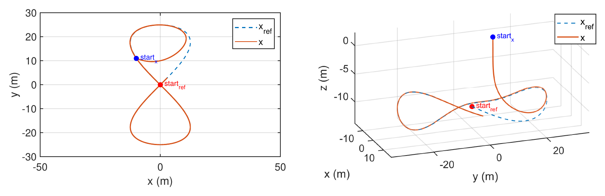
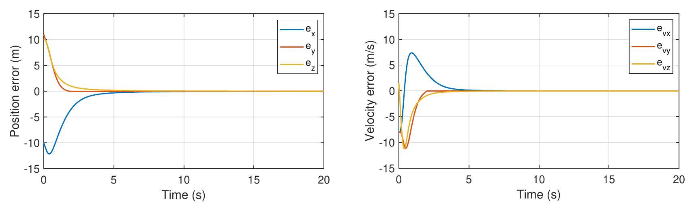
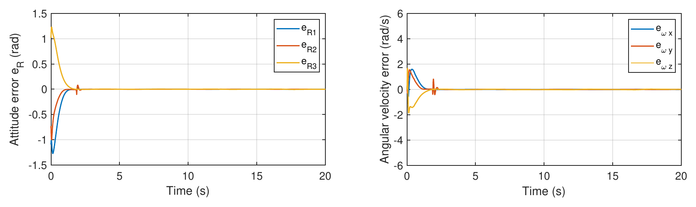
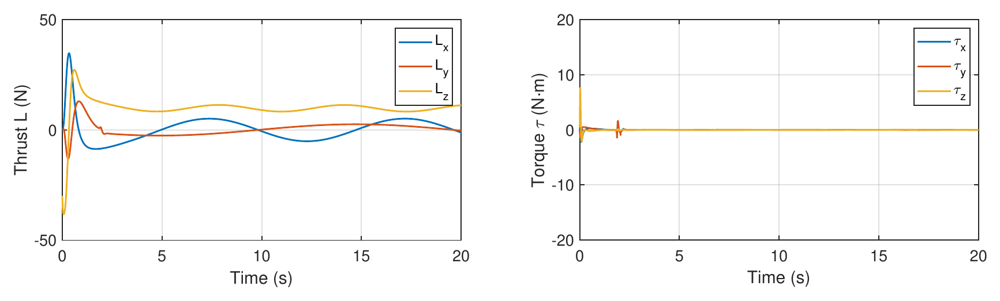

Nominal model only
The paper models no wind, sensor noise, or parameter error. The results show finite-time convergence for that model, not robustness to disturbances.
A controller for multirotor position and attitude tracking. I took an existing SO(3) sliding-mode controller, which only converged asymptotically, and extended it so that every tracking error reaches zero in finite time. The results are from MATLAB/Simulink simulation. The paper was accepted to IFAC 2026.
A multirotor moves by tilting its thrust. The position controller decides which way the thrust should point, and the attitude controller has to rotate the body there fast enough for the position loop to keep up. The attitude lives on SO(3), the group of 3D rotations, so ordinary vector errors do not describe it cleanly.
This project starts from a controller in Cheng-Che Chuang’s 2025 master’s thesis at CYCU. It measured attitude error with the logarithmic map of SO(3) and used integral terminal sliding surfaces. It was only asymptotically stable: the errors shrink toward zero with no guaranteed time to get there, and convergence was slow near equilibrium.
My goal was to keep the geometric attitude error and make position, velocity, attitude, and angular-velocity errors all reach zero in finite time.
Chuang had already graduated when I started, so I worked from his thesis. The finite-time extension was my own work, with guidance from my advisor, Prof. Jen-te Yu. Chuang is a co-author because the paper builds on his controller.
Two loops run in cascade. The outer loop turns the desired trajectory into a thrust vector, and that vector sets the reference attitude. The inner loop drives the body to that attitude on SO(3) and outputs a torque command.
Each sliding surface has a linear term and a fractional-exponent term, with 0 < α < 1. When the error is large, the linear term dominates and the error decays smoothly. Near zero, the fractional term dominates and brings the error the rest of the way in finite time. The position loop uses the same form: sp = β1ev + ex + exα₁.
LOG turns the rotation error RTRref into a 3-vector, so the sliding surface can treat attitude error like any other vector error. Because SO(3) is curved, the rate of eR is not the angular-velocity error itself. It is that error multiplied by the inverse left Jacobian, and the torque law accounts for this.
The design assumes the motors produce the commanded thrust magnitude immediately, so only the thrust direction has to be tracked. The inner loop’s job is to line up the body z-axis with the direction the outer loop asks for.
The paper’s results come from MATLAB/Simulink with the nominal model: no wind, no sensor noise, no parameter error. The reference is a figure-eight with a slow change in altitude, run for 20 seconds. The vehicle starts about 10 m from the reference on each axis, so every error starts large.
| Parameter | Value |
|---|---|
| Mass m | 2 kg |
| Inertia J | diag(0.03, 0.03, 0.05) kg·m² |
| Outer-loop gains | β1 = 0.8, α1 = 0.6, ε1 = 0.6 |
| Inner-loop gains | β2 = 0.4, α2 = 0.6, ε2 = 0.6 |
| Reference | xref(t) = [25 sin(0.32t) cos(0.32t), 25 sin(0.32t), −10 − 1.5 sin(0.1t)] m |
| Duration | 20 s, nominal dynamics |




In the paper, all four error signals reach zero in finite time and stay there for the rest of the run.
Separately from the paper, I ran the controller in PX4 software-in-the-loop simulation with Gazebo and ROS 2, and it tracked the trajectory.
The paper was accepted to IFAC 2026, with me as first author. It gives a cascaded controller in which position and attitude errors both reach zero in finite time while the attitude error stays on SO(3).
The paper models no wind, sensor noise, or parameter error. The results show finite-time convergence for that model, not robustness to disturbances.
Results are from MATLAB/Simulink, plus the PX4 software-in-the-loop run. The controller has not been flown on a physical vehicle.
The design assumes the motors deliver the commanded thrust magnitude instantly. Motor and ESC lag are not modeled.